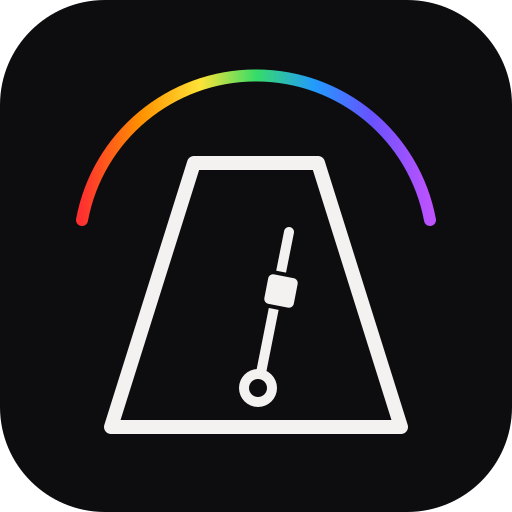

Duration changes apply to the next timer. Each session starts when you press Start.
Keep the app open for the chime. Phone lock or app suspension can delay it. The countdown catches up when you return.